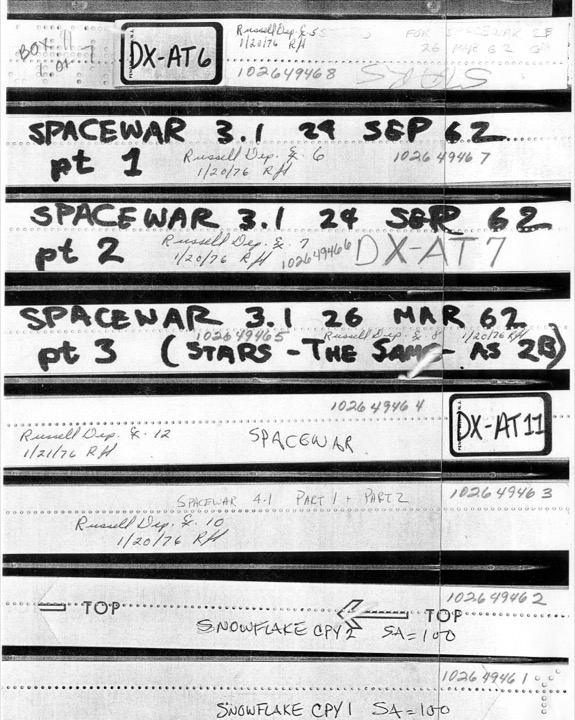
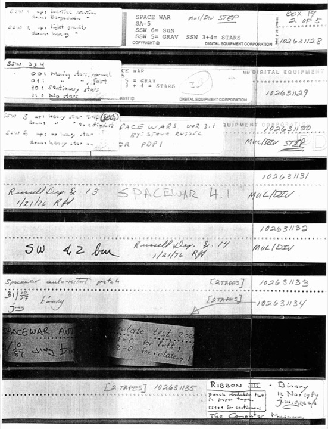

Versions of Spacewar!
Spacewar! is not one program but a family of them. Across 1962 and 1963 it was written, patched, and re-patched by a shifting cast of authors, and later reconstructed and extended by preservationists. For a critical code reading this matters: there is no single canonical text, only a variorum, and the differences between versions are themselves evidence of how the game, the machine, and the culture around them changed.
This page summarises the principal versions. Every one of them can be played, in faithful emulation, at Norbert Landsteiner's masswerk.at/spacewar, on whose detailed documentation this summary draws throughout.
| Version | Date | Author(s) | Status | Medium | Key points |
|---|---|---|---|---|---|
| 1 | 1961 / early 1962 | Russell, with the Hingham Institute group | LOST | – | First playable: two ships and torpedoes, no gravity or hyperspace. |
| 2A | Mar 1962? | Russell, Edwards, Samson | LOST | – | Inferred: the March 1962 integration stage before 2B, where gravity (Edwards) came together. No source known. |
| 2B | 2 Apr 1962 | Russell, Samson, Graetz, et al. | RECOVERED | Paper tape | First complete version, shown at MIT Parents' Weekend. Expensive Planetarium (Samson), Minskytron hyperspace, single-shot torpedoes. |
| 3.1 | 24 Sep 1962 | Russell | RECOVERED | Paper tape | The standard version, patches consolidated; the most widely preserved and emulated. |
| 4.0 | 2 Feb 1963 | Preonas ("ddp") | RECOVERED | Source listing | Base of the whole 4.x family: hardware multiply/divide and floating-point gravity, no score display. Identified and extracted from the Morris scan by the CCS team; the dfw strain forks from it. |
| Spacewar! 4 · the ddp strain, Monty Preonas (Diamantis Drakos Preonas), later with Joe Morris | |||||
| 4.0TS | 4 May 1963 | Preonas ("ddp") | RECOVERED | Source listing | A "Twin Star" variant of 4.0: simplified starfield (4th-magnitude stars removed) and minor hyperspace changes. Recovered by the CCS team. |
| 4.2 | 11 May 1963 | Preonas ("ddp") | RECOVERED | Source listing | Restored Expensive Planetarium; the first on-screen score display; complex input parsing via iot 111. |
| 4.3 | 17 May 1963 | Preonas ("ddp") | RECOVERED | Source listing | 4.2 plus a Twin Star subjective view on sense switch 2: the display recentres on the Needle. |
| 4.4 | 17 / 21 May 1963 | Preonas ("ddp") & Morris | RECOVERED | Source listing | Dual-console version: alternate frames go to a second scope so each pilot's ship holds the centre. Preonas numbers it 4.3. |
| Spacewar! 4 · the dfw strain, author unknown ("dfw" is the great Spacewar! mystery) | |||||
| 4.1 | 20 Feb 1963 | "dfw" | RECOVERED | Listing + tape | The dfw strain, built on Preonas's 4.0: dotted central sun, major code reorganisation. The original 1963 source survives in Steve Russell's tape box, recovered by the CCS team; see 4.1f for the later museum reconstruction. |
| 4.2a | ~22 Feb 1963 | "dfw" | RECOVERED | Listing + tape | Working single-shot mode; "no visible differences to 4.1 dfw." Survives as pt 2 of the original 4.1 listing and as an authentic paper tape (Russell's box). |
| 4.5 / 4.6 / 4.7 | May–Jul 1963 | unknown | LOST | – | Lost. Three versions between the 4.4 experiment (May) and the stable 4.8 (July); a comment in 4.8 shows one carried dual thrust/velocity controls. No source survives. |
| 4.8 | 24 Jul 1963 | "dfw" | RECOVERED | Source listing | The last classic MIT version, with the score display reworked by Samson. The identity of "dfw" has never been established. |
| 4.1f | base 20 Feb 1963; mod. 2005–08 | dfw; reconstructed by Samson | RECOVERED | Source listing | Not a 1963 release but Samson's Computer History Museum reconstruction of dfw 4.1: the 4.8 score display grafted on, star intensities remapped, tweaked to 2008. Now that the original 4.1 survives, the two can be read side by side. |
Status reflects what survives: Recovered, a complete program (a paper-tape image or full source); Partial, reassembled from incomplete listings; Lost, no source known. Medium is the form in which it survives: a binary paper tape image (the program as loaded into the PDP-1) or a printed source listing (from which the program is reassembled).
Sources: reconstructed listings for several versions at masswerk.at/spacewar/sources (linked per version below); authentic binary paper-tape images at bitsavers.org.

Spacewar! 1 (1961 to early 1962) LOST
The first playable version, written by Steve Russell and the Hingham Institute group and running by early 1962: two ships, torpedoes, and a simple star background, but no gravity and no hyperspace. The original is lost and survives only through reconstruction. reconstructed source code ›
Spacewar! 2A (March 1962?) LOST
No source survives, so what follows is informed inference. The name implies the version: a letter suffix exists because there is an earlier sibling, and Landsteiner notes that 2B's exhaust flames are half the size of later versions, "hinting at the slower speed of an even earlier version." 2A is best read not as a clean release but as the active integration stage of March 1962, just before the Parents' Weekend showing. Several strands converge here. Dan Edwards's outline compiler, which turned compact ship outlines into efficient display instructions, freed enough processor time to make the next step affordable: the central star and its gravity, also Edwards's work, which turned Russell's inertial duel into a contest of orbits. At the same time Peter Samson was writing the Expensive Planetarium, the accurate starfield whose surviving data is annotated "stars by prs for s/w 2b" and dated 13 March 1962. The earliest documented pre-2B build carries a date of 25 March 1962. On this reading, 2A is the version in which Spacewar! acquired the gravity that made it a game.
Spacewar! 2B (2 April 1962) RECOVERED
The first complete version, and the one shown to the public at MIT Parents' Weekend that month, arguably the first public showing of a digital video game. It carries Peter Samson's Expensive Planetarium (the real star background, devised for this version) and Martin Graetz's hyperspace, whose warp animation borrows the look of Minsky's display hack, the "Minskytron signature." Explosions are blocky, torpedoes single-shot, hyperspace limited to three risky jumps. This is the version closest to the game's public birth. source code ›
Spacewar! 3.1 (24 September 1962) RECOVERED
The standard version. Returning briefly to MIT, Steve Russell consolidated the scattered patches into one coherent program. It is the version most often preserved and emulated. source code ›
A new line emerged in 1963 that required the PDP-1's hardware multiply/divide option. Monty Preonas (signing "ddp") rewrote the gravity routine using floating-point conversions in version 4.0. From that common base the line split into two strains: Preonas's ddp strain (4.0TS, 4.2, 4.3, 4.4), which added the first on-screen score display and the Twin Star subjective view, and the dfw strain (4.1, 4.2a, 4.8), carried by an author who has never been identified. The masswerk genealogy calls the identity of "dfw" the great Spacewar! mystery.

Spacewar! 4.0 (2 February 1963) RECOVERED
The base of the 4.x line, by Monty Preonas ("ddp"). It introduced the floating-point gravity routine and the hardware multiply/divide requirement that all later 4.x versions inherit. There is no on-screen score display yet. The source survives as a listing held by Joe Morris and scanned to bitsavers. source listing (PDF) › · normalised text ›
Spacewar! 4.0TS (4 May 1963) RECOVERED
A "Twin Star" variant of 4.0 in Preonas's ddp strain, signed "spacewar 4.0ts 5/4/63 ddp." It is 4.0 with a simplified starfield (the 4th-magnitude star group removed) and a small hyperspace change: a ship re-entering normal space is given a random spin rather than the fixed one of 4.0. It predates the 4.3 Twin Star by nearly two weeks and was recovered by the CCS team. source listing (PDF) › · normalised text ›
Spacewar! 4.1 (20 February 1963) RECOVERED
The base of the "dfw" strain, signed and dated "spacewar 4.1 2/20/63 dfw" and built directly on Preonas's 4.0: a dotted central sun and a major code reorganisation. The original 1963 source survives, recovered by the CCS team from Steve Russell's own box of paper tapes (its second part is the 2/22/63 dfw 4.2a). For years the only accessible 4.1 was Samson's later museum reconstruction (see 4.1f); the original now lets the two be read side by side. original source (txt) ›
Spacewar! 4.1f (20 February 1963; mod. 2005 to 2008) RECOVERED
The version the Computer History Museum's restored PDP-1 plays for visitors, and so, for many people, the face of Spacewar! itself. It repays a close look, because it is not a historical release but a 2005 assemblage: a 4.1 base of 20 February 1963 with the 4.8 score display grafted on and the star intensities remapped to the museum's own machine, adjusted again as late as 2008. The canonical public Spacewar! is, in this sense, a reconstruction, and that a museum of computing exhibits a retrofitted composite as the original is itself a fact a critical reading should register. Now that the original 1963 4.1 has resurfaced (above), the reconstruction can be measured against it directly, which sharpens the point rather than dissolving it. The MACRO source carries Samson's own log at its head: "SW4.1f/spacewar 4.1 mod for CHM, 2005-06-01 to 2005-11-28 ... changed delay in score display, 2008-08-22." Its earlier June 2005 checkpoint survives too, as revision "d". source code (rev. f) › · paper-tape image › · earlier rev. d ›
Spacewar! 4.2a (22 February 1963) RECOVERED
The "dfw" strain's single-shot version, with a slightly fainter, dotted central sun and, per the genealogy, "no visible differences to 4.1 dfw." Its number collides with Preonas's unrelated ddp 4.2: "dfw" used "4.2" here on 22 February 1963, nearly three months before the ddp 4.2 of 11 May, and the two are different programs from the two strains, this one a single-shot revision of 4.1 dfw with no score display. Its source survives as the second part of the original 4.1 listing (the 2/22/63 dfw pt 2) and as an authentic paper tape in Steve Russell's box, both recovered by the CCS team. original source (txt) ›
Spacewar! 4.2 (11 May 1963) RECOVERED
Monty Preonas's own 4.2, which shares only its number with the dfw strain's earlier "4.2" (the 22 February 4.2a above). They are separate programs: where the dfw version is a single-shot revision of 4.1 with no scoring, this ddp 4.2 of 11 May restores the Expensive Planetarium and carries the first on-screen score display, drawn using the outlines of the two ships, and a starfield reminiscent of 2B. The score routine is about two and a half pages long and signed by no one. The source survives as a listing held by Joe Morris, signed "spacewar 4.2 5/11/63 ddp"; its symbol table was assembled by Morris himself ("jcm") on 23 May 1963. source listing (PDF) › · normalised text ›
Spacewar! 4.3 (17 May 1963) RECOVERED
By Monty Preonas ("ddp"), notable for its Twin Star mode, a subjective view rendered from the Needle's perspective and reached on sense switch 2: an early experiment in point-of-view rendering. The original ddp listing survives in the Morris scan. Reading it against the masswerk reconstruction is itself instructive: the reconstruction is a later modified variant that swapped some 1963 code for 4.0-style code, whereas the scanned original keeps the period code, including the active score-display encoder. reconstructed source, masswerk › · original listing, Morris scan (PDF) › · normalised text ›
Spacewar! 4.4 (21 May 1963) RECOVERED
The fullest of the subjective-view experiments, and the richest single find on this page. In Monty Preonas's own later account, a second oscilloscope compatible with the PDP-1 was in the lab for three or four months. At first it served only as a second console, so two players with separate hand controls no longer crowded one screen. Preonas then rebuilt the display to give each cockpit its own view: every other frame was sent to the opposing console, so that on each screen that pilot's ship, the "thin" Needle or the "fat" Wedge, held the centre while the rest of the universe moved around it. By his account it "worked very well," a fully playable game, with one cosmetic flaw: the alternating frames produced a doubled, "twin" star at the centre, never corrected before the borrowed scope was taken away. By giving two players distinct real-time perspectives at once, it predates any other known example of the form by roughly ten years. The listing is signed "ddp," its two parts dated 17 and 21 May 1963, and appears to have been edited by Joe Morris alongside Preonas. A numbering knot remains: Preonas calls this version 4.3, while the reconstruction reserves 4.3 for the simpler single-screen ego view and files this as 4.4. Preonas later donated his annotated listing to the New Mexico Museum of Natural History and Science in Albuquerque. reconstructed source, masswerk › · original listing, Morris scan (PDF) › · normalised text ›
Spacewar! 4.5 (May to July 1963) LOST
Lost, together with 4.6 and 4.7. The three sit in the gap between the 4.4 experiment of late May and the stable 4.8 of 24 July 1963, and no source survives for any of them. What can be said about them has to be reasoned backwards from the versions on either side.
Spacewar! 4.6 (May to July 1963) LOST
Lost. A comment left in the 4.8 source shows that one of these three versions offered dual thrust, or velocity, controls. Which of the three it was cannot now be said.
Spacewar! 4.7 (May to July 1963) LOST
Lost. Since 4.4 left its twin-star fault uncorrected and 4.8 runs clean, it is plausible that one of these missing versions was the issue-free iteration in between. Plausible, but unprovable: the tapes were cut up and thrown out, and the gap in the record is itself part of what the version history records.
Spacewar! 4.8 (24 July 1963) RECOVERED
Apparently the last MIT version, signed "dfw." It carries the on-screen score display in its final form, the Preonas score routine as reworked by Peter Samson. The initials "dfw" have never been identified: in a 2005 exchange neither Steve Russell nor Joe Morris, both present in the lab, could put a name to them. The most polished version of the founding video game is signed by a hand the founders themselves could not place. source code, part 1 › · part 2 › · scorer display ›
Scanned listings: part 1 (PDF) › · part 2 (PDF) › · scorer (PDF) ›
Variants, hacks, and kin
Landsteiner's emulator also carries reconstructions and extensions worth noting for the reading. A Holloman Air Force Base variant restores altered starting positions recorded by a player in 1966. Spacewar! 2015 is Landsteiner's own new PDP-1 program, reviving the Minskytron hyperspace signature and a working subjective view. Parameter hacks such as "Winds of Space" warp the torpedoes' trajectories by tuning a single constant in memory. And the same emulator runs other early PDP-1 graphics programs, including the Minskytron itself and Snowflake.
Spacewar! leaves the PDP-1
Spacewar! did not stay on one machine. Through the 1960s it was carried, re-coded, and reinvented on computers across dozens of labs, often rebuilt from memory or a magazine listing rather than the MIT source. The fullest census is the Kinephanos study "Space Odyssey: the long journey of Spacewar! from MIT to computer labs around the world" (2015), summarised below.
| Machine | Title | Where | Date | By & notes |
|---|---|---|---|---|
| PDP-1 | Spacewar! | MIT | 1961–63 | Russell, Saunders, Graetz, Edwards, Samson, et al. (the original) |
| PDP-4 | Spacewar | University of Michigan | 1963 | – |
| DDP-224 | Spacewar | University of Michigan | 1964 | – |
| PDP-6 | Spacewar | Stanford | 1964 | Steve Russell |
| IBM System/360-65 | Spacewar | MIT Computation Center | 1965 | Edson Hendricks |
| PDP-7 | Duel | Cambridge University | 1965 | M. S. Peterson & J. C. Viner (DECUS 7-40); "very similar to SPACE-WAR for the PDP-1" |
| PDP-7 | Spacewar | University of Pittsburgh | 1965 | Russell Randshaw |
| CDC-3100 | Spacewar | University of Minnesota | 1966–69 | A. W. Kuhfeld; invisibility instead of hyperspace, distinct ships, scoring, fuel and ammo limits |
| LINC-8 | Spacewar | DECUS | 1966 | E. Duffin |
| PDP-10 | Space War | Stanford AI Lab | 1967 | Steve Russell; Ralph Gorin's version (SWR), up to 5 players, the one played at the 1972 Olympics |
| Data General NOVA | Spacewar | Fall Joint Computer Conf. | 1968 | – |
| PLATO / ILLIAC | Spacewar | University of Illinois | 1969 | Richard Blomme |
| IBM 1620 | Spacewar | – | ~1969 | Jim Burroughs |
| Imlac PDS-1 | Spacewar | – | 1970 | – |
| PDP-8 | Space War | DECUS | 1965–68 (listing 1971) | Evan Suits (LAB-8); source held here |
After Table 1 in the Kinephanos study (2015). The PDP-8 source (Evan Suits's LAB-8 version, "Interplanetary death and destruction on your LAB-8") is archived in this project's sources; its dates and the rest of the census follow Kinephanos. Ralph Gorin's PDP-10 version ran up to five ships and was the one played at the 1972 "Intergalactic Spacewar! Olympics" at the Stanford AI Lab, reported in Stewart Brand's celebrated Rolling Stone dispatch ("HOW MANY SHIPS? MAXIMUM IS 5").
Built to be changed
The proliferation of versions is itself a finding. Every version but the earliest opens with a block of "interesting and often changed constants," arguably the first cheats in gaming, meant to be retuned at the console or in the debugger. The spaceship outlines are likewise defined as hackable strings of octal directives, compiled at run time by Dan Edwards's outline compiler, plausibly the earliest just-in-time compiler. The code was made to be modified, which is part of why the family is so large, and part of what the reading will pursue.
Version histories, dates, and technical detail summarised here are drawn from Norbert Landsteiner's masswerk.at/spacewar, where each version can be played and is documented far more fully than this overview.
Play version 3.1
This site runs the standard 1962 version, the one read here, in a PDP-1 emulator in your browser.
▶ Play The object